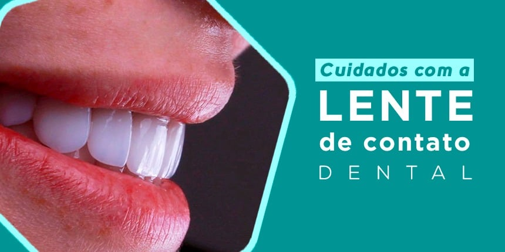

WhatsApp: (12)98219-1773
R. Rubião Júnior, 847
Horários de Funcionamento:
Seg - Sab: 9:00 - 20:00 Domingo: Fechado
Lentes de contato dental não são eternas e dá, sim, para preservá-las sem exageros. Quem já passou pelo tratamento com lentes de contato dental sabe bem do que estou falando: passada a alegria das primeiras semanas, logo vem o medo de que o brilho e a cor dos laminados desapareçam ao longo dos anos. E tamanha preocupação faz todo o sentido. Afinal, o tratamento não é eterno e exige cuidados para não danificar as delicadas superfícies em porcelana. Mas não é preciso recorrer a exageros para mantê-las bonitas por muito mais tempo. Um exemplo dos exageros nos cuidados com lentes de contato dental é eliminar da dieta todo tipo de alimentos com pigmentos naturais ou artificiais, ou até mesmo fibrosos. Dá, sim, para preservar a naturalidade e delicadeza destes laminados por muitos anos sem medidas extremas. E esqueça, de uma vez, de medidas malucas como até mesmo adotar a extensa lista do que deve ser evitado durante o clareamento dental caseiro. Preservar por muitos anos a beleza das lentes é mais fácil do que você imagina.

Cuidados básicos para lentes de contato dental: o essencial. Os cuidados com lentes de contato dental são poucos, mas incorporá-los ao dia-a-dia é essencial. Alguns deles, inclusive, são recomendados para preservar o esmalte dentário da ação de substâncias presentes na dieta comum. Veja uma lista com medidas preventivas básicas para evitar o aparecimento de laminados opacos e manchados antes do tempo:
✓ evite o consumo excessivo de vinhos tintos, inimigos mortais das lentes de contato dental;
✓ utilize escovas dentárias com cerdas ultra macias (Curaprox ou Edel White, importadas, ou ainda a Colgate Black, nacional);
✓ abandone hábitos parafuncionais como morder unhas e lápis – os riscos para fraturas em facetas e lentes são maiores nesses indivíduos;
✓ confeccione placas especiais para bruxismo se o distúrbio já havia sido diagnosticado antes do procedimento estético;
✓ diminua o consumo de vinagres, iougurtes e refrigerantes, que, de forma diferente, deixam opacas as superfícies de porcelana de lentes e facetas em porcelana;
✓ estabeleça um protocolo para higiene oral sem dispositivos que resultem em riscos ou arranhões sobre os laminados;
✓ cafés e cigarros estão, sim, associados ao amarelamento precoce de lentes quando consumidos em quantidades elevadas;
✓ não utilize cremes dentários específicos para clarear dentes;
✓ cuidado com agentes clareadores profissionais utilizados no clareamento dental caseiro: o contato direto destas substâncias com laminados em porcelana acabam com o brilho do dispositivo.z
Outras dicas para evitar surpresas desagradáveis ao longo dos anos.
Danos à superfície de facetas e lentes são motivos para muita dor de cabeça. Isso porque, dependendo da forma ou local em que ocorrem, pode ser preciso substituí-los – ás vezes, no conjunto inteiro de laminados. Um problemão.Veja alguns cuidados com lentes de cuidado dental que não podem passar despercebidos:
✓ não utilize equipamentos ultrassônicos ou jatos de bicarbonato em dentes revestidos com laminados durante a consulta odontológica para profilaxia;
✓ evite abrir tampas ou rasgar objetos em dentes recobertos com lentes de contato dental – a dica vale também para dentes naturais;
✓ procedimentos dentários como restaurações ou tratamento endodôntico (canal) em dentes viziinhos a laminados necessitam de cuidados extras para evitar danos lateriais;
✓ pacientes que já utilizam placas para bruxismo necessitam confeccionar novos dispositivos – não tente adaptar as antigas!;
✓ durante períodos de atividade muscular nos surtos de bruxismo a placa miorrelaxante deve ser utilizada inclusive durante o dia;
✓ o aparelho para contenção dos dentes pós tratamento ortodôntico precisa ser regulado com cuidado para não riscar ou fraturas os laminados.
Deixe um comentário